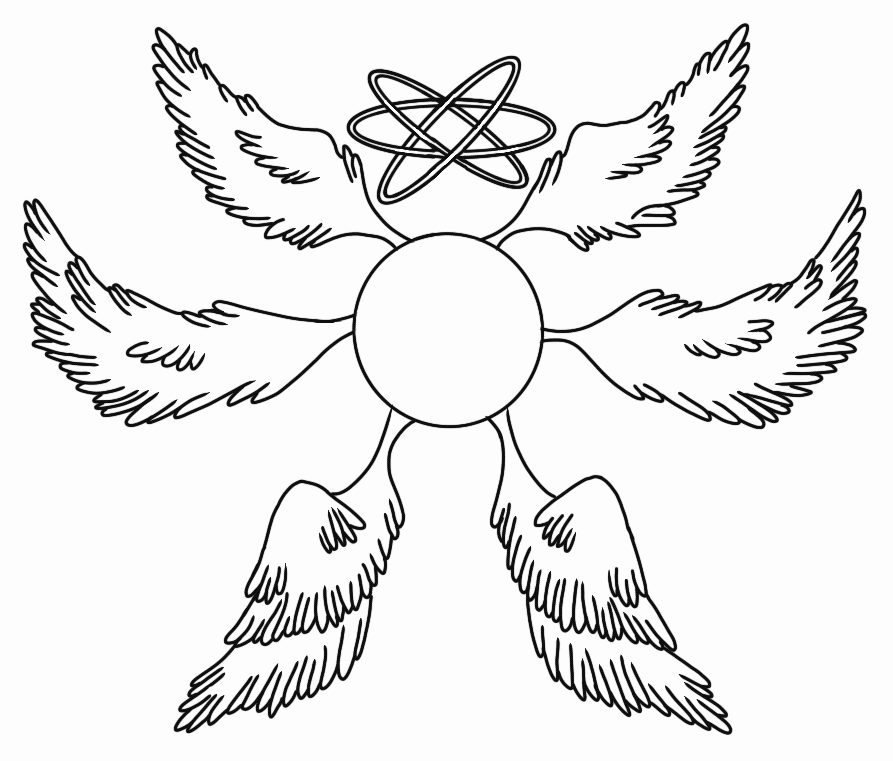

This page is dedicated to helping mythology nerds conduct research about the demon Paimon and their varying personas throughout mythology and fiction. This page is also designed for genshin impact theorists looking to dig into the inspiration behind Hoyverses Genshin Impacts Paimon. All prompts are listed from oldest to newest starting with The Livre Des Esperitz all the way to Genshin Impact in order as accurately as possible! Xx
♥Last updated Feb 2024 during update 4.4 in Genshin♥

From the Abrahamic Pantheon Paimon is a spirit named in early grimoires these included The Lesser Key Of Solomon in the Ars Goetia as King Paimon, Johann Weyers Pseudomonarchia Daemonum as King Paimon, Jacques Collin De Plancy's Dictionnaire infernal as Paymon, The Livre Des Esperitz as Poymon, The Liber Officiorum Spirituum as Paimon, The book of Abramelin as Paimon, and certain french editions of The Grimoires Of Pope Honorius as Bayemon as well as british library Slone 3824 and Slone 3853 as Paymon. As well as appearing as a character in Hoyoverses Genshin Impact as Paimon, as our mysterious whimsical travel companion!
King Paimon appears as the ninth spirit in the Goetia, the twenty-second spirit in the Pseudomonarchia Daemonum, and in the Dictionnaire Infernal. The Livre des Esprits and the Grimoire of Pope Honorius specify that King Paimon is king of the west. Practicing occultist Carroll "Poke" Runyon suggests that the name ultimately derives from "a Middle Eastern Pagan Goddess", on the grounds that some manuscripts depict King Paimon as a young man riding a camel, and that the name "Paimon" purportedly meant "a tinkling sound" in an unspecified language, in turn a claimed reference to Isis. This is part of an overall claim that the Lesser Key of Solomon was by Solomon and rooted in Mesopotamian mythology.
Paimon is described as a man riding a Dromedary camel, preceded by men playing loud music (particularly trumpets). Some texts describe the camel as crowned, while the rest describe King Paimon himself as crowned. He is described as having a beautiful or androgynous face but still refers to him using masculine pronouns. The spirit has a "hoarse voice", but he must be commanded to speak plainly, and will speak in his native language until commanded to converse in the summoner's own language.
Paimons knowledge includes all arts and "secret things," such as knowledge regarding the Earth, its waters, and the winds. He will truthfully answer all questions asked of him, and can reveal hidden treasures, knowing all the affairs of the world. King Paimon's other powers include: knowledge of past and future events, clearing up doubts, making spirits appear, creating visions, acquiring and dismissing servant spirits, reanimating the dead for several years, flight, remaining underwater indefinitely, and general abilities to "make all kinds of things" and "all sorts of people and armor appear" at the behest of the magician.